nJoy is the power protection, solar energy and IT&C brand of DAI-TECH S.A., where I have worked as B2B Marketing Specialist since November 2025. This page goes through the three areas of my work there, starting with lead generation through LinkedIn ads, then the partner relationships and the program I created for our solar B2B partners, and finally the B2B side of the website and newsletters.
I plan and run LinkedIn ABM campaigns that put nJoy's power protection (UPS) and solar energy products in front of distributors and channel partners in international markets. For each campaign I build the ad concepts, carousels and copy around the accounts we want to reach, so that every decision-maker sees a message written for their market rather than a generic product ad.
Alongside bringing in new partners, I look after the relationships nJoy already has, keeping constant communication with distributors and partners through dedicated content and co-branded initiatives. For our B2B solar partners I went a step further and created a partner program of their own, so that the work we do together has a clear structure on both sides.
(the photo is from our co-branded solar campaign with E.ON Romania)
I manage the B2B side of nJoy's website and newsletters, the part built for business partners rather than end customers. On the website I keep the partner-facing pages up to date, and through the B2B newsletters I keep our partners informed about the products and programs that matter to their business.